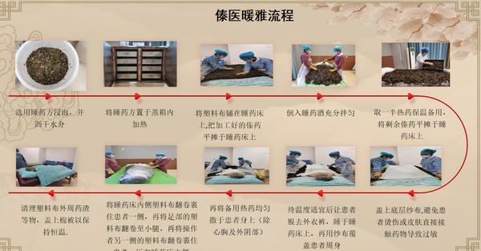
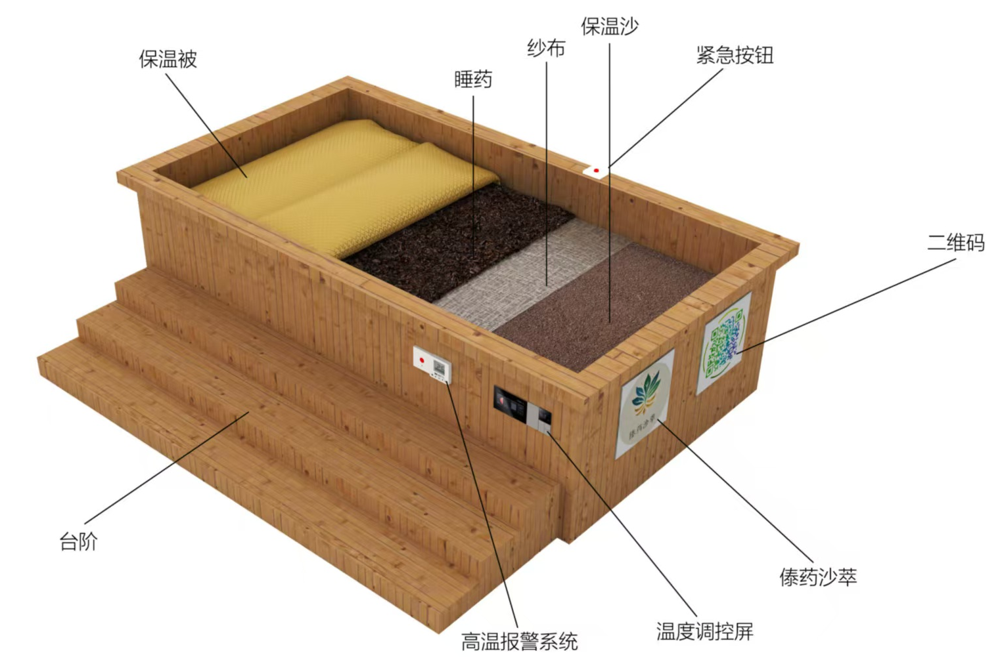

聚焦傣医非遗暖雅（睡药疗法）现代化创新，融合沙疗技术与现代智能科技，研发智能温控睡药床，打造“药-沙-热”三维协同治疗体系，解决传统睡药疗法温控难、药材消耗大等痛点。项目深挖西双版纳傣药资源，打造多元傣药配方，结合超临界萃取等现代技术提升药效，依托傣医理论与科学原理，对风湿骨痛、中风后遗症等病症疗效显著，兼具民族医药传承价值与市场发展潜力，由专业教师与傣医专家指导，团队专业配置完善，创新模式可复制、易推广。

✅ AI 智能体自主感知与决策功能
✅ 多区域独立精准温控功能
✅ 睡药疗法与沙疗协同增效功能
✅ 个性化智能适配与迭代优化功能
✅ 多重智能安全防护功能
✅ 智能人机交互与远程管理功能